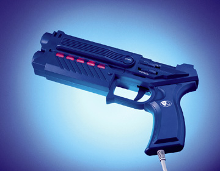
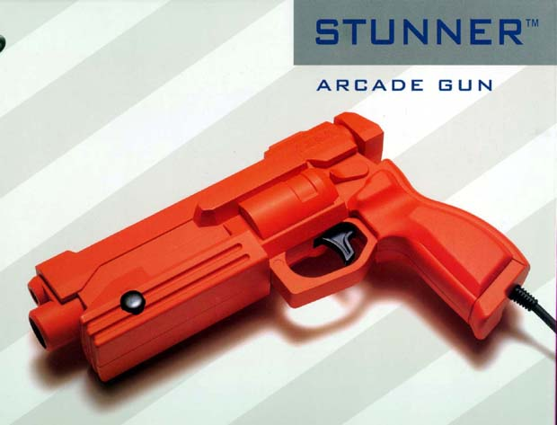
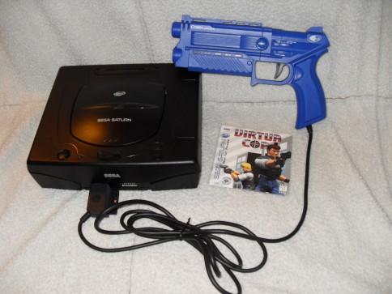
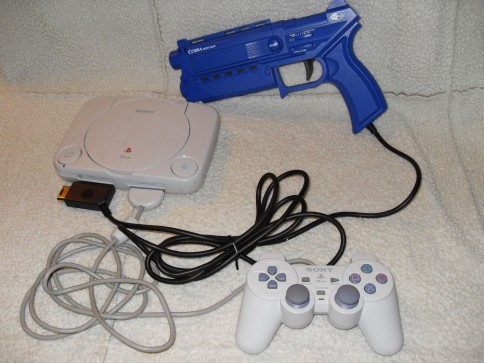
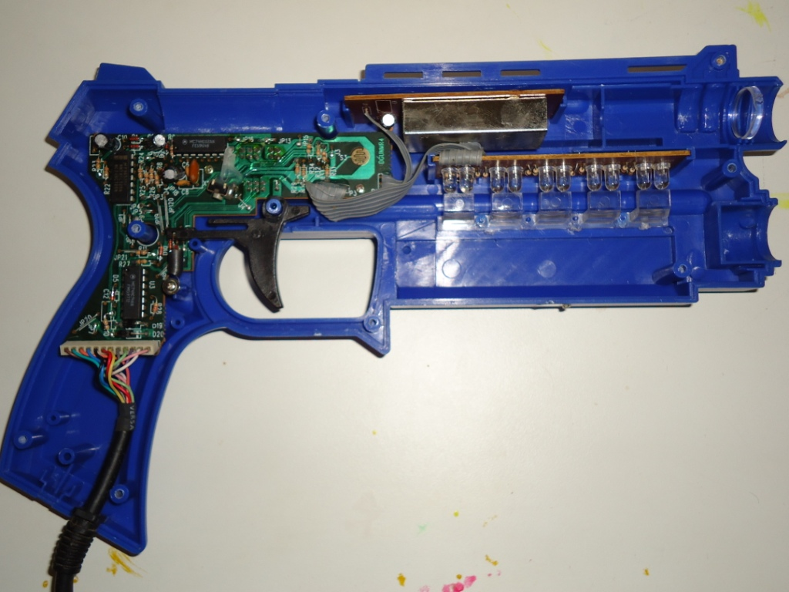
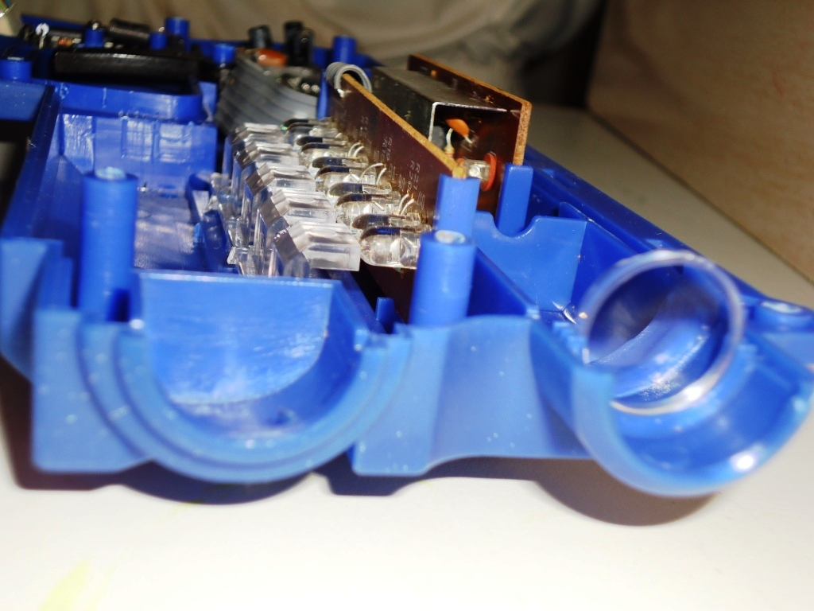
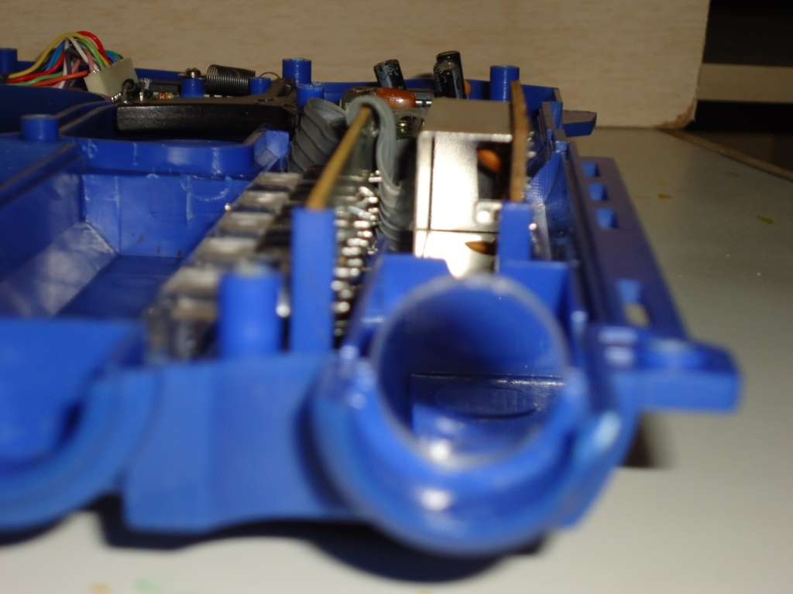
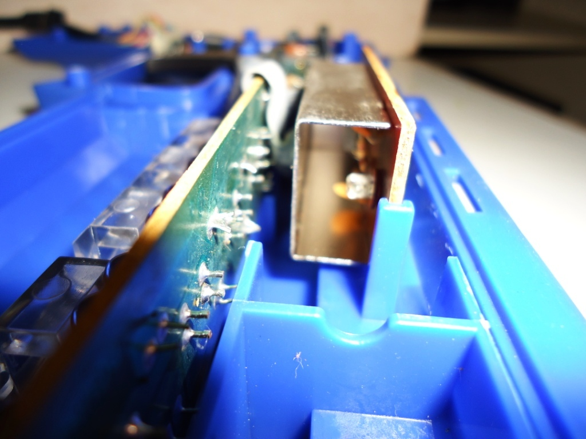

Conheça a Cobra Light Gun
 Por Gigacom - Pistola praticamente todo video game teve uma. Alguns tiveram umas mais simples como a Zapper do NES, outros tinham um treco grandalhão como a Super Scope do SNES... mas poucas são tão legais como essa que agora vos apresento: Cobra Light Gun
Por Gigacom - Pistola praticamente todo video game teve uma. Alguns tiveram umas mais simples como a Zapper do NES, outros tinham um treco grandalhão como a Super Scope do SNES... mas poucas são tão legais como essa que agora vos apresento: Cobra Light Gun
___________________________________________________________________________
A Cobra Light Gun foi um acessório compatível com Playstation e Saturn, e visualmente é parecidissima com a Stunner, a pistola original do Sega Saturn. O apoio, tamanho e até o peso das duas são parecidos, porém as semelhanças acabam ai.

Cobra a direita, e Stunner a esquerda. Beeeeem parecidas.
Produzida pela Nyko, famosa fabricante de acessórios para video games desde a era 8/16 bits, a Cobra esbanja em tudo. O material usado nela é de ótima qualidade, a cor azul é padrão e olhando de perto nota-se pequenos pontinhos brancos em toda a pistola. Logo de cara ela impressiona pelo tamanho e beleza, possui um formato perfeito para se apoiar na mão, o cabo é bem longo, o que facilita o manuseio dela. Possui alguns leds na lateral que vão se acendendo conforme se atira. Mas como sempre se diz, beleza não é tudo, e felizmente a Cobra tem ainda mais para oferecer. Tiro automático e recarga automática são preciosas funções que somente esta pistola possui. A velocidade do disparo automático é regulável, e a sensibilidade da pistola para identificar os alvos na tela é muito boa.
Uma das maiores qualidades dessa pistola, é dual-compatibilidade com dois dos mais expressivos video games de sua época: Playstation e Saturn. O conector dela possui entrada para esses dois video games, e não é preciso fazer nenhuma configuração nela para que funcione com um ou outro, é tudo automático.
 
Os títulos mais expressivos para essa pistola são: Virtua Cop 1/2 e House of the Dead para Saturn, Time Crisis e Resivent Evil para Playstation. Area 51 tambem é um joguinho bem bacana, e está disponivel para os dois consoles.
E como essa maravilha é por dentro? Este é um detalhe que você confere com exclusividade aqui no Giga Old Games! Confira:




Alguns detalhes vale ressaltar. Aquela caixa metálica na parte de cima, contem um sensor foto-sensivel, que identifica os alvos na tela toda vez que o gatilho é apertado. Ha uma lente de acrílico que faz o foco de toda luz ir diretamente para esse sensor, ha até um pequeno orificio entre o sensor e a lente para ajudar nesse processo. O botão do gatilho é um simples do tipo que soa um clique toda vez que é apertado e pode ser facilmente trocado quando necessário. Os componentes internos são todos de boa qualidade e são soldados devidamente nas placas sem rebarbas, exessos de solda ou coisas do tipo. A conexão dos fios para um e outro video game é feita de forma diferente dentro do conector do cabo da pistola.
Enfim, melhor que falar dessa pistola é jogar com ela. A senção é ótima, jogar Virtua Cop por exemplo é como estar no shopping atirando naquelas maquinas. E apesar de haver poucos jogos para se usar com ela, TODOS esses jogos são excelentes e valem cada disparo que se faz com essa belezinha. Se você ainda não tem uma dessas, não perca a chance de possui-la com a oportunidade aparecer. Ela é sem duvida a melhor de todas.
Acesse o Trombone e comente sobre essa matéria!


Que tal acessar a sua conta do banco, com todo o conforto e comodidade de sua casa? Para isso, o pai de familia iria precisar do Telebradesco, um cartucho especial fabricado com exclusividade pela Tec Toy para o Bradesco; e tambem iria precisar pegar emprestado o Mega Drive do muleque para acessar...